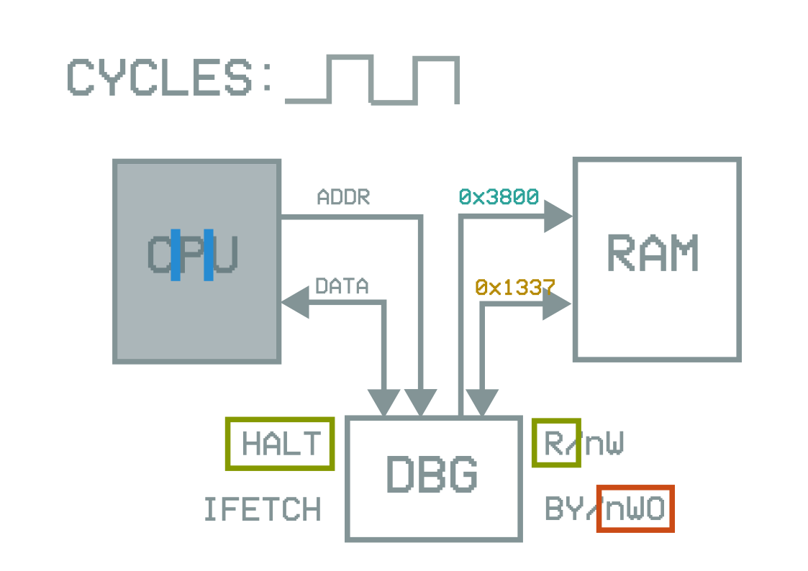

A Peek Behind the Curtain
Debug Interfaces and How to Misuse Them
pcy
whoami
- PhD researcher @ COSIC
- "Evil hardware hacker"
Debuggers?
Also not this
What is a JTAG?
JTAG has:
- Pin definitions
- Voltage signals ↔ bit mapping
- Chip identification
- More stuff: "scan chain", "boundary scan", state machine, IR & DR, ...
JTAG does NOT have:
- Standardized CPU debug
- Standardized memory access
SWD, cJTAG, Nexus, ...: similar situation
Actual debug stuff is vendor-specific!
Locks
- Debug is useful during development
- "Dangerous" after deployment
- Extract firmware
- Read out secrets (keys!)
- lock away debug in factory
Lock levels
- Debug unlocked
- Partial debug access
- No flash access, only RAM
- limited features available
- Debug locked
- Downgrade attacks
- Bugs in 'partial' protection
How does hardware debug work?
Instruction-level debug
Note: not just code execution gadget!
- Bypass regular instruction fetching
⇒ No activity on bus!
- CPU paused between 'manual' instructions!
Example: Xtensa (ESP32), TI CC2510
Bus-level debug
Example: TI MSP430
Memory-level debug
Example: Arm, AVR (TPI/UPDI)
Arm ADI
Arm ADI, take 2
What now?
MSP430 Bus Access
- MSP430 is a multicycling architecture
- Instruction >1 cycle, no pipelining
- "Nemesis" attack: side channel information from instruction lengths & write cycles
- Break "IP encapsulation" protection & extract secrets (using timer interrupts)
- Debug access: full bus info, don't need interrupts
Arm Memory Access
- STM32F0: debug lock timing bug
Very first access still goes through
- STM32F1: debug lock only blocks data fetches
Use debugger for instruction fetches
- nRF51: debug lock only blocks reads, not writes
Take over CPU to run custom code
- EFM32, ...: lock init at startup: glitchable
- SAML11, ...: custom ROM Table components
State machine bugs?
Arm debug locks
Possible at any layer!

But how?
Practical problem...
OpenOCD, PyOCD, ...
- Complex "all in one" init
- Reg & mem access
- Break, resume, single-step
- Breakpoints, tracing, ...
- Write binary to flash
- Scriptable but slow & jittery
What we need
- Fast & light reconnect
- Low-level bus transfers
- Discover & poke internal ROM tables
- Deterministic timing
- Use together with oscilloscope, FI rig, ...
Let's roll our own!
Custom debug framework
- Low-level access
- Runs on microcontroller
- Extremely work-in-progress
- Arm Debug only (for now)
SAML11 boot ROM & DSU

Current status
- DP, AP, ROM table, memory map works
- Lock/unlock sequence
- Boot ROM communication
- Load & run test code from debugger
For glitching setup calibration
Applications
- Attack & extract SAML11 boot ROM
- Develop more debug lock bypass attacks
- Debug infrastructure fuzzing
- Microarchitecture reverse-engineering aid
If you're interested: contact me!
Conclusion
- Hardware debug is complicated
- Many bugs and vulnerabilities to be found
- Custom framework to do the above
- WIP, but HMU if interested